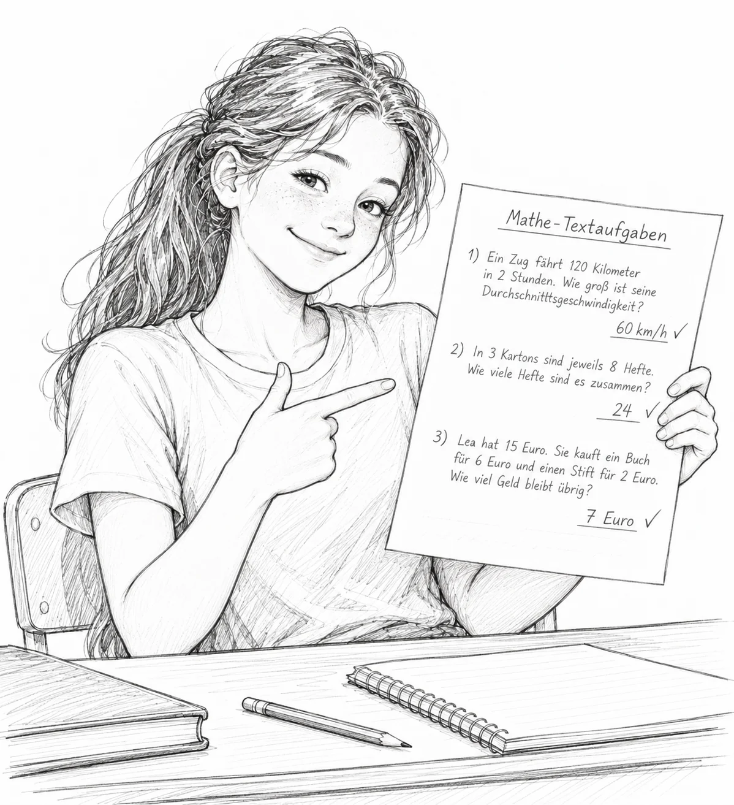
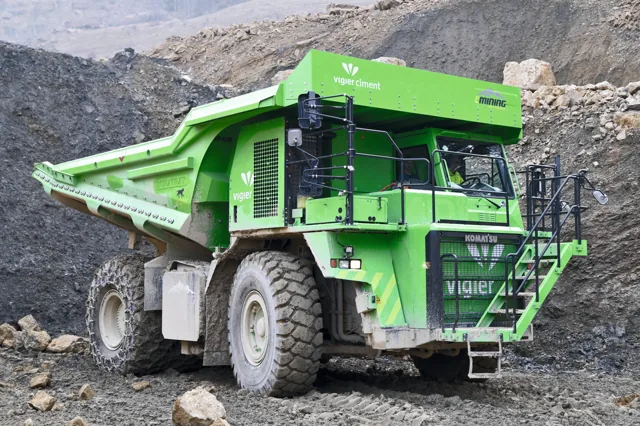
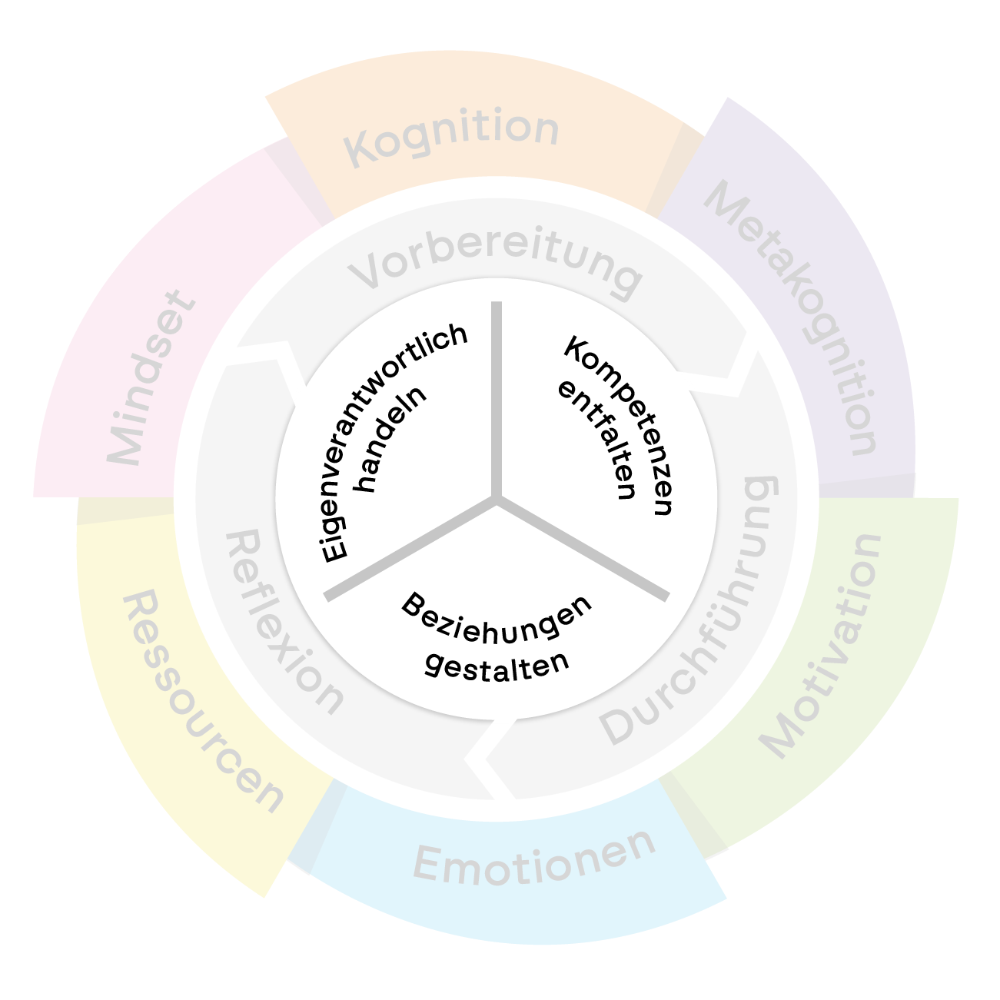
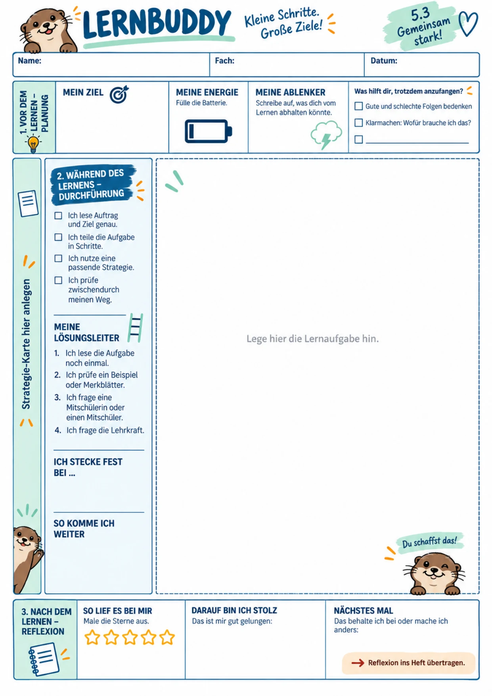
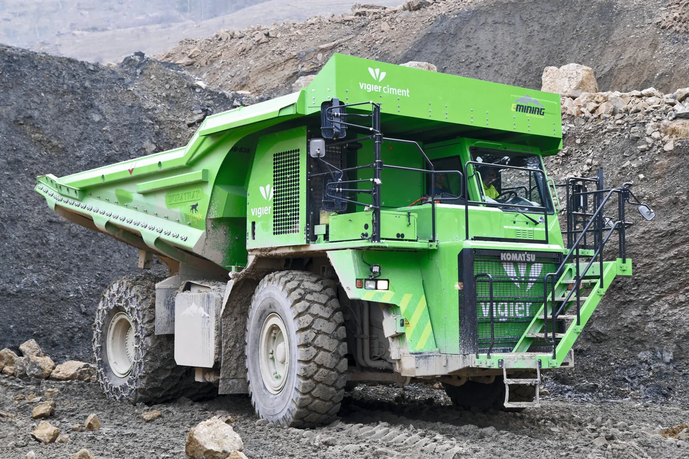

SRL
SRL ist
keine Methode!
Was selbstreguliertes Lernen (nicht) ist.
Christoph Wegemann

Kurz zu mir
Christoph Wegemann
- Deutsch & Technik · Gesamtschule NRW
- ca. 1.200 Lernende, sechszügig
- Netzwerk Zukunftsschulen
- SRL-Pilot Jahrgang 5
Vorab.
- Bilder ohne Quelle: KI-generiert.
- Die Folien gibt’s im Anschluss.

Wenn er kommt, ist Schluss.
Foto: Andreas Sutter · architektur-technik.ch
Leitfrage
Wie befähigen wir Lernende, ihr Lernen selbst zu steuern?
Mythos 1
„SRL ist Freiarbeit.“
Freiheit ohne Strategie = Selbstbeschäftigung.
Mythos 2
„Die Lehrkraft zieht sich zurück.“
Andere Rolle: Gerüst, Feedback, Begleitung.
Mythos 3
„Das können nur starke Lernende.“
Gerade Schwächere profitieren – wenn SRL gelehrt wird.
Mythos 4
„Immer Projektarbeit und offene Methoden.“
Jede Unterrichtsform kann SRL fördern.
Mythos 5
„SRL ist ein Persönlichkeitsmerkmal.“
SRL ist erlernbar.
SRL ist …
- ein Prozess
- metakognitiv
- erlernbar
- strategisch
- zyklisch
- begleitet
- für alle
„Ich weiß, warum ich lerne, wie ich lerne – und was ich beim nächsten Mal anders machen will.“
Wo steht SRL?
selbstständigBrauche ich jemanden neben mir?
selbstorganisiertWie ordne ich meine Arbeit?
selbstverantwortlichWofür stehe ich ein?
selbstreguliertWie steuere ich mein Lernen?
Selbstständig ≠ selbstreguliert.

Karlen et al., Universität Zürich · selbstreguliertes-lernen.uzh.ch
Karlen et al. · Uni Zürich
Die SRL-Turbine
- Grundbedürfnisse
- Lernprozess
- Kompetenzbereiche

Karlen et al., Universität Zürich · selbstreguliertes-lernen.uzh.ch
Ebene 1 · Unser Why
Warum regulieren?
- Kompetenz
- Autonomie
- Eingebundenheit
Nicht allein gelassen.
Drei Anker.
Stebner
Uni Osnabrück
Strategien & Implementierung
Karlen
Uni Zürich
Metakognition & Motivation
Wirth
Ruhr-Uni Bochum
Äußere Struktur
Prüfraster, kein Stundenplan.
Werkzeuge sind nicht SRL.
ZielSRL
WegStrategien
GerüstWerkzeuge
RaumUnterricht

Rahmengebendes Werkzeug
Der Lernbuddy.
Äußeres Gerüst →
innere Routine.
Entwickelt von Prof. Joachim Wirth und Team, Ruhr-Universität Bochum – für die Klasse 5.3 von uns angepasst.
Wir testen Bausteine.
Deutsch
Lernwege
Kompetenzraster
Technik
Lernnavigatoren
Werkstatt
Jahrgang 5
Lernbuddy
Lösungsleiter
Perspektive Digitalisierung
KI macht kein SRL.
Aber sie verändert, was skalierbar wird.
Material · Lernwege · Feedback → mehr Zeit für Begleitung
Wo es reibt.
- Planung ohne Realismus
- Reflexion als Floskel
- Zu viel Wahl überfordert
- Material simuliert Selbstständigkeit
Auch Schulentwicklung.
- Gemeinsames Verständnis
- Fachliche Freiheit
- Gemeinsame Sprache
- Zeit & Begleitung
- Wenige Routinen
- Progression
Kein Bauplan. Eine Landkarte.
Nicht alles gleichzeitig lösen.
Aber die Verbindungen sehen.

eDumper im Steinbruch Péry (BE) · Foto: Andreas Sutter · architektur-technik.ch